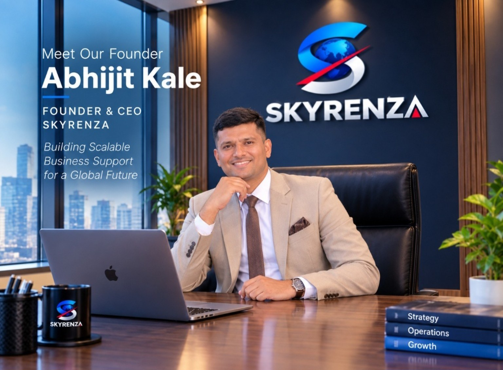
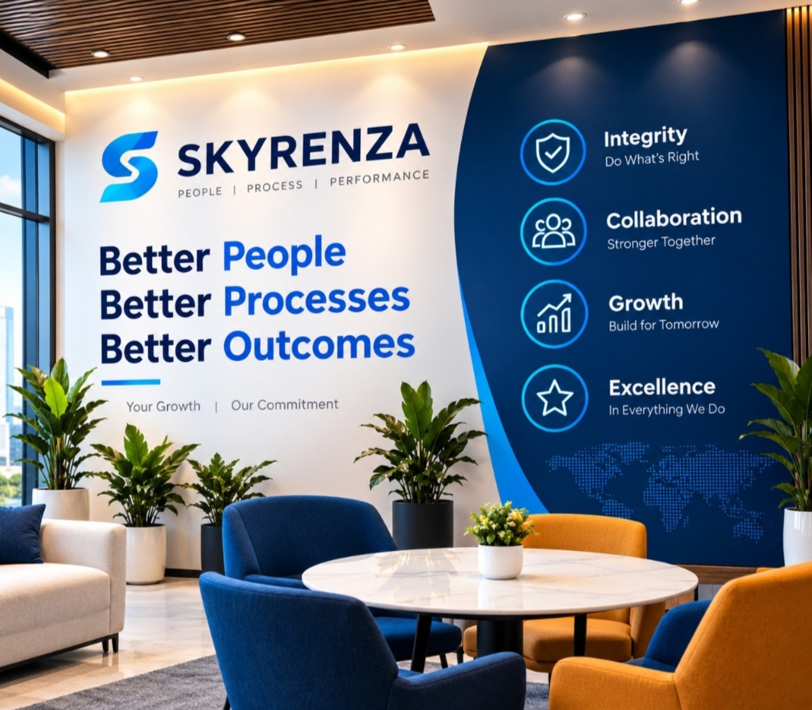
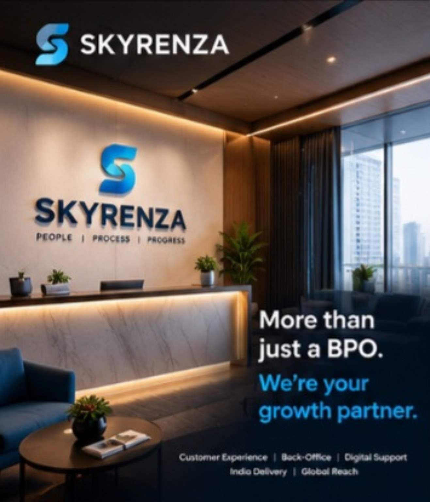

01
Customer care & voice support
Professional inbound and outbound voice support designed around your customer journey, service standards and brand tone.
Practical people-powered support, smarter workflows and a customer-first mindset—built to help growing businesses serve better and scale with confidence.
Built around your business
Flexible support shaped to your goals, channels and workflows.
SKYRENZA is an emerging India-based business process outsourcing company focused on customer support, customer experience and operational assistance.
We believe great service starts with listening, clear processes and people who care. We work to build support solutions that fit each client’s needs today and can adapt as the business grows.
How we work ↗Start with the service you need. Build a support model that can grow with you.
Professional inbound and outbound voice support designed around your customer journey, service standards and brand tone.
Responsive assistance across email, chat and written customer communication.
Structured administrative and process support to help keep everyday work accurate and moving.
Research and lead-management assistance aligned with your target audience and sales process.
Organized data handling, validation and quality-focused workflow assistance.
Help improve the moments that matter through consistent service, thoughtful workflows and feedback-led refinement.
Discuss a solution ↗We start by understanding what your customers need and what your team needs to deliver. Then we shape a practical operating approach with clear expectations and room to improve.
Listen firstUnderstand your customers, goals and current challenges.
Build the processAlign workflows, communication and quality expectations.
Improve continuouslyUse feedback and agreed performance measures to refine delivery.
AI can help teams find information faster, organize requests and draft responses. SKYRENZA’s technology direction is focused on using digital tools responsibly while keeping people accountable for customer outcomes.
AI-assisted knowledgeHelp teams locate relevant guidance and approved answers.
Workflow and ticket supportStructure incoming requests and make follow-up easier.
Human review and escalationKeep sensitive, complex or uncertain cases with a person.
These are areas SKYRENZA can discuss and design with clients. Specific AI integrations and service levels depend on the agreed project scope.
Our commitments are simple: communicate clearly, respect people and keep working toward a better experience.
Be clear, honest and accountable in our work.
Treat every interaction with patience and respect.
Work as an extension of the client’s team.
Learn from feedback and make processes better.

“My vision for SKYRENZA is to build more than a BPO. I want to create a company where people, technology and customer experience come together to deliver meaningful business value.”
With a people-first outlook and a long-term ambition to serve international clients, Abhijit is focused on building dependable operations, strong client relationships and a workplace where employees can grow.
Connect with SKYRENZA ↗SKYRENZA’s identity reflects our ambition to connect people, processes and customer experience.


Tell us about your customers, your current challenges and the support you need. We’ll start with a conversation about fit, scope and next steps.
India-based · International-client focused
Service required, channels, expected volumes and preferred start date.